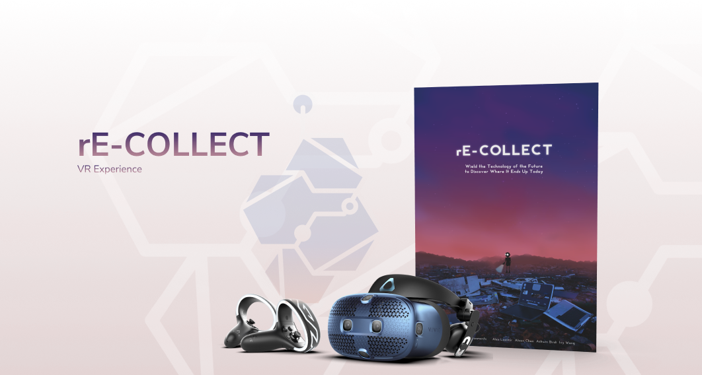

Quickly scan through all available volunteer positions and check out details or apply if interested.
Overview
In a high level interface design class，me and my 4 other teammates made a versatile application that serves on both mobile phones and desktops. The mobile version is designed for students to find local volunteer opportunities, specifically high school students from B.C. that need to complete their grad transitions in order to successfully graduate. The desktop version is designed to help volunteer coordinators streamline the process of finding volunteers, organizing applications and managing documentations.
My Roles: User Test / Experience Design / Interface Design / Interaction Design
Tools: Adobe XD / Figma
The Problem
In Canada B.C., a minimum of 30 community volunteer hours are required for high school students to graduate. The processes of applying or registering for volunteer opportunities are long and inefficient. Many of our college interviewees mentioned that they either had difficulty with the application process or had lost track of the 30 hours.
Meanwhile, volunteer coordinators are currently spending huge chunks of time on the management process of physical forms, emails, and excel sheets for volunteer documentations. This process is less efficient and not applicable to large scale events that require many volunteers.
Target Users
- High school students who need to complete their volunteer hours for graduation
- Employees of local non-profit organizations who manage volunteers regularly
The Goal
- To allow prospective volunteers to seek volunteer opportunities, apply for them, and keep track of any volunteered positions in addition to receiving any reference letters.
- To allow coordinators to promote their volunteer opportunities and manage volunteers effectively and efficiently.
My Roles and Responsibilities
During ideation, to understand the current way our audiences go through the series of getting their volunteer hours, I used a user journey map to highlight their pain points and identify where our team can intervene. We then brainstormed on features that should be implemented to ease the problem. Some “how might we" questions helped me to stay focus on the problems and increased the effectiveness of each solution that I came up with.
From wireframes to mockups, to make sure that our desktop and mobile interfaces had logical user interaction flows, I followed Jakob Nielsen's usability heuristics. Based on the usability principles, I tested to make sure that both of the platforms had consistent user interaction flows. When our team had different ideas for the application workflow, we conducted multiple rounds of AB tests to see how users would react and prefer. The usability heuristics also guided my way when I was working on the final prototype for our mobile interface. I was able to improve on the consistency, flexibility, and more natural navigation for users. Additional micro-interactions made the prototypes stand out, look more refined and visually appealing.
Visit our project website for more details
Project Takeaways
Involve was my first full project where I was able to practice both user experience and interface design skills. I was able to learn and apply a few different design methods such as generating personas, making user journey maps, experiencing stages of ideation, and applying the usability heuristics.
The most significant thing that I’ve learned was the importance of iteration. Iteration is essential during the process of building interfaces. We were able to refine and discuss improvements during the multiple phases of iterations that we had. During each iteration, we were able to discuss and improve on parts of the interfaces that we have never thought of during earlier meetings, and I think that was quite memorable and valuable.


Home page tracks each volunteer's current registered positions; status of the application; any saved volunteer positions and more.

The application form shows available positions. Simply follow the application form, easily fill out information, and directly submit through the app.

Volunteers can easily keep track of their volunteer hours, view past volunteer experiences and set personal goals.

The message feature allows volunteers and coordinators to always stay in touch, accept or decline volunteer offers and form chat rooms with other volunteers.

The history feature serves as an archive. It allows volunteers to come back and check their previous volunteer experiences, as long as reference letters.
Other Exciting Projects



View Project